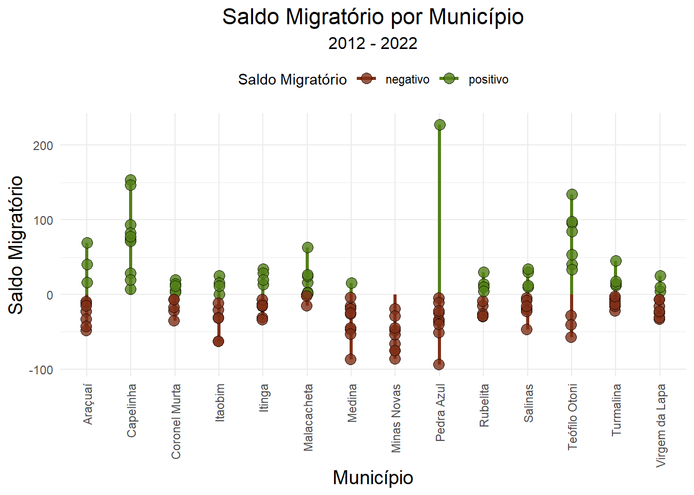

CENSO_2022 X._POP_Cad_x_municipio_Censo_2022 Município IBGE
1 34297 68.1 Araçuaí 3103405
2 39626 66.6 Capelinha 3112307
3 8200 82.3 Coronel Murta 3119500
4 19151 61.7 Itaobim 3133303
5 13745 73.1 Itinga 3134004
6 17516 52.7 Malacacheta 3139201
7 20156 67.9 Medina 3141405
8 24405 67.7 Minas Novas 3141801
9 24410 68.9 Pedra Azul 3148707
10 5679 78.4 Rubelita 3156502
11 40178 64.7 Salinas 3157005
12 137418 46.9 Teófilo Otoni 3168606
13 20000 63.1 Turmalina NA
14 11804 79.1 Virgem da Lapa 3171600Migração com CadÚnico
O que os dados do CadÚnico podem revelar sobre o a população em idade ativa e migração?
Taxa de Analfabetismo
Para cálculo da taxa de analfabetismo da população inscrita no CadÚnico em idade ativa para o trabalho, considerou-se a faixa etária entre 15 e 64 anos. Observa-se que Minas Novas e Malacacheta acumulam o maior percentual de pessoas em idae para o trabalho na situação de analfabetismo. Os municípios de Araçuaí e Turmalina se posicionam no outor estremo, com as menores taxas de analfabetismo dentro do grupo analisado. Rubelita e Itinga apresentaram tendência de elevação da taxa nos últimos anos enquanto que Minas Novas revelou tendência de redução da taxa de analfabetismo. Os percentuais anuais no total do grupo variam entre 8,93 (2022) e 18,44 em 2014 quando os municípios tiveram a maior taxa.
Taxa de Escolarização
A taxa de escolarização representa o percentual de indivíduos com idade acima de 25 anos que concluiu a educação básica, ou seja, o ensino médio. Tems-e assima a média geral de estudo do grupo em foco. No grupo analisado, a média geral de todo o período é de 27%, sendo que Coronel Murta tem a melhor média no perído (43,18%) e Minas Novas a menor média (20,01%) da populção em idade ativa em situação de vulnerabilidade. Os dados mostram que a taxa de escolarização vem crescendo entre os anos 2012 e 2022. No último ano, Turmalina se destaca com 42,14% do segmento populacional com idade acima de 25 que possui o ensino médio completo, seguido de Teófilo Otoni e Turmalina.
População em Idade Ativa
Os dados referentes à condição de vínculo empregatício se referem à população inscrita no CadÚnico que declarou ter trabalhado na semana anterior à inscrição ou atualização, no ano referência, com fechamento da base em dezembro do referido ano. Observa-se a predominância de trabalho na condição de autônomo ou sem vínculo contratual em todos os municípios e em todo o período apurado. Vê-se também a tendência de aumento do percentual de pessoas que prestaram algum serviço na condição de aprendiz, estagiário ou sem remuneração. Os municípios Rubelita, Itinga e Malacaheta apresentam maior percentual de pessoas que trabalharam sem qualquer típo de vínculo empregatício no período analisado. Araçuaí, Trumalina, Teófilo Otoni e Virgem da Lapa são os municípios com maior percentual de trabalhadores autônomos ou remunerados sem contrato de trabalho. Coornel Murta e Virgem da Lapa possuem o maior percentual de indivíduos no serviço militar ou empregador, inscritos no CadÚnico nos últimos três anos analisados. Entre 2012 e 2018, Itinga foi o município com maior percentual de indivíduos na condição de aprendiz, estagiário ou que trabalharam e não tiveram remuneração e Medina nos três últimos anos analisados. Os dados de 2022 não se encontravam disponíveis na base acessada.

Saldo Migratorio Anual
Com base nos dados do Cadastro único, apurou-se o saldo migratório e a taxa líquida de migração do período entre 2012-2022 dos municípios do Projeto Lítio. O grupo alvo foi a população em idade ativa (14 a 64 anos). A definição de migrante baseou-se no município de última residência no ano anterior, sendo, portanto, uma análise de período. O saldo migratório se refere à diferença entre a quantidade de pessoas que entraram no município e a quantidade de pessoas que saíram do município, entre os indivíduos que permaneceram inscritos na base. A taxa líquida de migração mostra o percentual do saldo em relação à população com idade entre 14 e 64 anos, no ano limite, já tendo sido consideradas as saídas no intervalo (mortalidade, saída da base e mudança para outro estado/país). Nos municípios do Vale do Lítio predomina o saldo migratório negativo ou próximo de zero, o que significa que não há retenção da população com idade ativa para o trabalho em situação de vulnerabilidade financeira.
Warning: Using `size` aesthetic for lines was deprecated in ggplot2 3.4.0.
ℹ Please use `linewidth` instead.
taxa liquida de migração
A migração é o componente imediato de resposta a condicionantes ou choques na população. Pelos dados observados, isto não aconteceu nos municípios, mantendo-se a tendência de evasão. Rubelita, Salinas e Turmalina apresentaram taxa líquida positiva entre 2021/2022, porém com saldo líquido pouco expressivo em relação ao grupo populacional analisado. Capelinha vem mantendo a taxa líquida de migração positiva, porém com saldo migratório também pouco expressivo. Pedra Azul apresentou sinais de reversão do cenário negativo de contribuição no crescimento populacional pela migração somente entre 2021/2022. Teófilo Otoni que é o maior município em termos populacionais do grupo do Vale do Lítio apresentou taxas oscilatórios no período o que revela a baixa capacidade de retenção, caracterizando-se como um município de passagem.